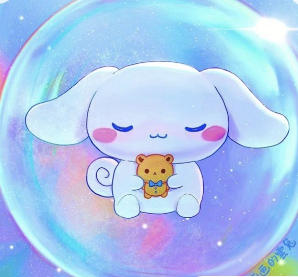

Meet Cinnamoroll, the adorable and charming puppy from Sanrio who’s sure to steal your heart! With his big, floppy ears that resemble cinnamon rolls, Cinnamoroll is not just a cute face but also a beloved character known for his sweet and gentle nature. First introduced in 2001, this fluffy white puppy has a talent for flying with his ears and loves to spend time with his friends at his cozy café. Cinnamoroll’s cheerful personality and heartwarming adventures make him a favorite among fans of all ages. Whether you’re enjoying a cup of tea or just looking for a little extra cuteness in your day, Cinnamoroll is here to bring a smile to your face!
